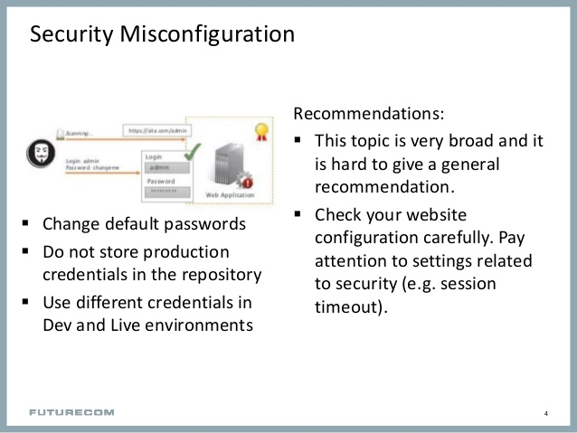

WEB SYSTEMS AND TECHNOLOGIES
PHP : (Hypertext Preprocessor).
PHP is a server Side Scripting Language.
PHP is used for a server side scripting of a webpage that makes it more dynamic and responsive.
PHP is a open source and PHP gives plenty of benefits in creating a website as a scripting language.
It is also easy to understand and to use by begginers.
The Things you will need is Web Server, PHP, and a database(MySQL or MongoDB)
function functionName() {
PHP codes . . . ;
}
Example of setting a session variable: $_SESSION["animal"] = "cat";
Syntax : setcookie(name, value, expire, path, domain, secure, httponly);
The setcookie() function should appear before the HTML tag.
Servlet is a java proggraming language that is easy to use and it is scalable, robust and object-oriented.
Before servlets are introduced, CGI (Common Gateway Interface) is used.
It is also a proggraming language that is used to create a web applications.
Java objects that are intended to play the role of server components in Client-Server communications.
Java program that give capabilities or functionalities to run a server.
Handles clients request by generating responses to such request.
Asynchronous and open source.
It is great to use in Server-Side because it is well suited for the job like sending messages from one person to another.
Node.js can also use to modify your data in the database.
Node.js built on Google Chrome Javascript Engine.
It is developed by Ryan Dahl in 2009
Things you can do with Node.js :
Simply an HTML web page that contains additional bits of code that execute application logic to generate dynamic content.
A JSP is a sever-side technology that the developers use to develop dynamic web pages.
OWASPIt is a non-profit organization that aims to improved the security of the webpages in the internet. |

|
1. Injection
It is a major problem in terms of security in a web.
Allows the attacker to input or inject codes to your website to obtain information or destroy.
Types of Injection attacks :
|
2. Broken Authentication and Session ManagementBroken Authentication and Session Management is a security weakness that most of the creators of the websites. Developers use a custom authentication and session management to be unique which cause this weakness. Attackers use the broken authentication to access the username and the password of the users. |
3. Sensitive Data ExposureSensitive Data Exposure is a security weakness of many websites that have accounts. Forgetting to create a algorithm to hide the password of a account is one of the cause of this problem. This will cause to a leaking of private files or leaking a personal information to the attacker. |
4. XML External EntityIt is also king of injection attack that targets the parsing of XML files. A XML(Extensive Markup Language) is a normal txt file that can be a storage of data. When extracting sensitive data from the XML file the attacker can inject codes to obtain the file you are accessing. |
5. Broken Access ControlThis is the issue of when the developer allows other people to access content or use functions that only admin can use. Sharing permissions can also be the reasons of this. The in correct implementation of access controls is difficult to implement. This problem can also result to changing roles to the organization or giving privalages to the people who should not have the privalage. |
|  |
6. Security MisconfigurationSecurity Misconfiguration happens when the deafult passwords or accounts is not change and other people can use that to access your system. Misconfiguration is defined as the mistakes or unintended set-up in configuring a application making use of a default passwords and usernames in application that makes your application vulnerable to other people. |
7. Cross-Site ScriptingIt is a type of injection with involves malicious codes or scripts that harms the system. This malicious scripts can access the cookies, sessions and other sensitive information about the system. There are two categories of the attack:
|
8. Insecure deserializationIt is the attack that modifies the structure on how the developer store data or how the developer execute the code. Changing the serialized object to obtain information or insert information to gain access in the system. |
9. Using Components With Known VulnerabilitiesSome developers use API or component that they don't really know and that makes them vulnerable to attacks. Not knowing what are the safety standards or principles in the component that they are using can make them known to vulnerabilities. Not updated components is also a cause. |
10. Insufficient Logging and MonitoringInsufficient Logging and monitoring can lead to the attacks that is unnoticable because it is not monitored. Porper Logging can detect abnormalities in the system and response according to the situtaion to avoid or prevent a attack. |